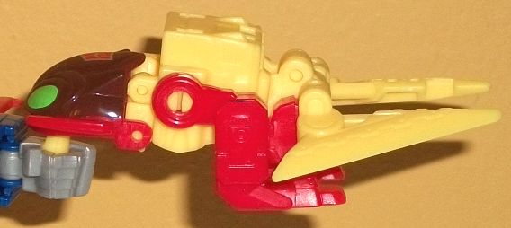

Allegiance
: Autobot
Size
: Titan Master Set
Difficulty of Transformations
: Very
Easy
Color Scheme
: Pale yellow, red,
and some dark brown and light green
Rating
: 5.2
Repugnus' Titan Master
in robot mode is based-- as you'd expect-- on G1 Repugnus' robot mode design,
squished into the standard Titan Master proportions to fit the whole line's
gimmick. Some of the key details of the "core" robot mode are replicated
here, with some vent-like details on the legs, rectangular details on the
shoulders with his fists molded onto the inside of his arm pieces, and
a few more square details on the chest and hips. The head is detailed like
Repugnus' surprisingly bland robot head, with two little eyes, a rectangular
headcrest, and a band across his forehead. Surprisingly, the Titan Master's
head is also painted, with some appropriate yellow paint on most of the
face and a bit of the headcrest. The rest of this mode has yellow on the
main body and upper legs, and red on the the rest of the appendages and
the base plastic on the head. Repugnus has the same articulation as any
other Titan Master-- he can move at the neck, as well as back-and-forth
at the shoulders, hips, and knees (the latter two as one for both legs,
since the legs are molded together). In head mode, again as you'd expect
it looks like G1 Repugnus' headsculpt, albeit a design taken more from
the cartoon than the original toy; the main difference between the two
being that the eyes are much wider on this design, almost to the point
of being a visor. They're painted a nice light green, while the rest of
the head is painted yellow. As with the Titan Master's head, the head mode
has a regular face, a rectangular helmet along the sides, and a band across
his forehead with a small headcrest-vent in the center. This one, of course,
has clearer details, and a few more angular details here and there as well.
It's a solid headmode, though having the front be all yellow while the
back two-thirds being all red does look a bit odd.
Repugnus' accessory's
main mode is basically a replica of G1 Repugnus' alternate mode. It's a
clawed, two-legged monster... thing? It's just a monster, let's go with
that. He's got really funky insectoid mandibles with a toothed maw, and
what looks like an armored head painted brown with two large light green
eyes. His arms are very robotic-looking and end in two single-pronged claws--
made for puncturing things, not actually picking things up, apparently.
The legs, on the other hand, look fairly organic, with claws on the end
of the feet and a couple of circles on the back of the legs that look kinda
like thrusters. The Titan Master forms the core of the chest, in a rather
clever twist, with the Titan Master's little head being a nice peg for
the beast head to slot onto. In a departure from the G1 toy, this version
of Repugnus has wings, which are rather sharp and have serrated-like details
in the middle. Unfortunately, beyond the aforementioned paint apps on the
head, there's no paint apps on this accessory, which is a bummer as the
claws in particular could've used some paint-- at least the mold detailing's
there and the red and pale yellow are broken up fairly well on the body,
though. For articulation in this mode, each arm can move back-and-forth
at the shoulder, and his legs can move forward and back at the hips (as
one, as they're both part of the same piece).
The accessory's other
main mode is very much one of those "because we say so" modes. I guess
it's supposed to be a jet, but outside of the wings on the side, it's pretty
unconvincing. Basically all the transformation is is laying Repugnus on
his back, rotating the head and legs up, and then taking out the Titan
Master from the chest, transforming him into robot mode, and plugging him
into the cavity in the chest so that's he's in the cockpit "riding" the
jet. Really, though, the end result is very much Repugnus' beast mode on
its back looking forward. The head is blatantly obvious, the arms are blatantly
obvious, and the legs are blatantly obvious (though at least the aforementioned
thruster details on the back do add to the look of the jet mode slightly).
But honestly, it's pretty lazy and I just prefer to ignore it.
To get the accessory
into its weapon mode, start with the beast mode (with the Titan Master
plugged in), fold up the legs, fold down the scissor-wings, and then fold
up the head and fold out the little peg from the bottom of it for a larger
figure to hold. Ta-da! It's... a scissors weapon, I guess. That is, a pair
of scissors with Repugnus' entire beast mode splayed out behind him. Just
like the jet mode, this is an incredibly weak mode, intending you to focus
only on one small part of the toy and ignore the obvious parts from the
"main" beast mode all behind it. Again, I just prefer to ignore this weapon
mode, especially since the scissors can't even move on the molded-in hinges
inwards to actually clamp together or anything.
Titans Return Titan
Master Repugnus has a few cool aspects. The accessory's beast mode is very
solid, and the Titan Master is well-done in both modes. In general, despite
there not being many paint apps, the colors are broken up fairly well,
too. However, the jet and weapon modes are incredibly poor, making it one
of the weakest Titan Master sets. If you want a little bitty Repugnus figure
that doesn't transform into a robot, here you go, I guess; otherwise, I'd
recommend the deluxe (exclusive) version of Titans Return Repugnus over
this one a LOT more.
Review by Beastbot